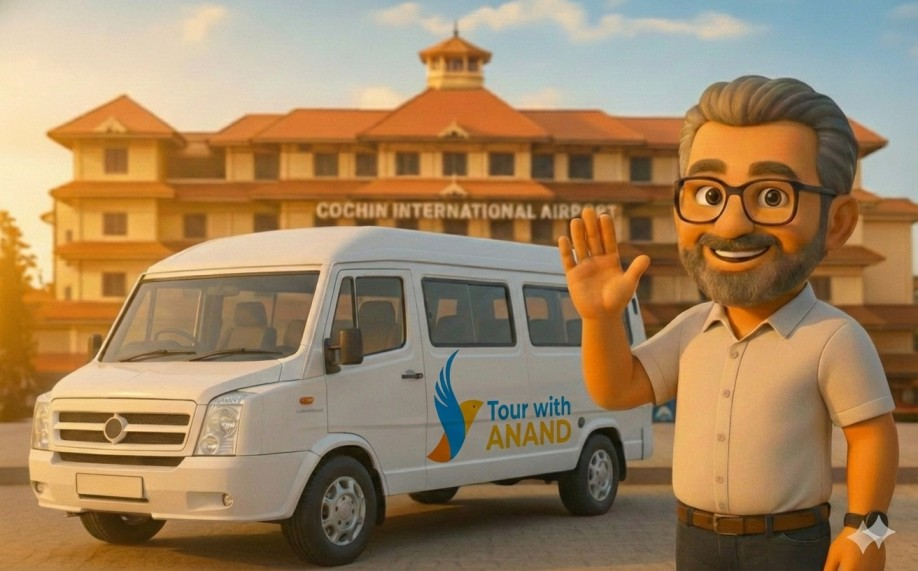

Planning a family holiday, corporate event, or a spiritual pilgrimage? Tour With Anand offers top-tier Tempo Traveller rentals directly from Cochin International Airport and Ernakulam city. We specialize in providing spotless, well-maintained vehicles that ensure your entire group travels together in unmatched comfort.
Whether you need a quick airport transfer or a multi-day itinerary exploring the hills of Munnar or the backwaters of Alleppey, our highly experienced chauffeurs know the routes perfectly to ensure a smooth, safe ride.

We do not believe in a one-size-fits-all approach. Select the exact vehicle size your group requires, featuring plush push-back seating, ample legroom, and powerful dual AC systems.
The ultimate European-style luxury van. Features aircraft-like seating, panoramic windows, high roof headroom, and advanced suspension. Perfect for VIP guests and premium family tours.
Ideal for extended families and medium groups. Excellent maneuverability for the winding hill station roads of Munnar and Thekkady.
Spacious seating with dedicated luggage space. The most popular choice for long Kerala itineraries and temple tours.
Heavy-duty, ultra-spacious coaches tailored for destination weddings, corporate retreats, and large pilgrimage groups.
We offer fixed, transparent pricing for all major tourist and pilgrimage destinations. Here are the most frequently requested routes from Cochin Airport.
| From | To Destination | Distance | Est. Travel Time |
|---|---|---|---|
| Kochi Airport (COK) | Munnar Hill Station | 110 km | 3.5 Hours |
| Kochi Airport (COK) | Alleppey (Houseboats) | 85 km | 2.5 Hours |
| Kochi Airport (COK) | Pamba (Sabarimala) | 150 km | 4.5 Hours |
| Kochi City | Thekkady (Periyar) | 155 km | 4.5 Hours |
| Kochi City | Athirappilly Waterfalls | 65 km | 1.5 Hours |
Our Tempo Travellers are equipped with dedicated rear luggage spaces and roof carriers. A 12-17 seater can comfortably accommodate 10-15 standard-sized suitcases alongside hand luggage.
Absolutely. We regularly conduct tours from Kochi into Tamil Nadu (Ooty, Kodaikanal, Madurai) and Karnataka (Coorg, Mysore, Bangalore) with valid interstate permits.
Yes, we operate 24/7. Whether your flight lands at 2:00 PM or 2:00 AM, our driver will be waiting at the arrival terminal with a placard.
Secure your premium vehicle for your travel dates today.
Get a Quote on WhatsApp